Solution
- La première lettre est R donc on tourne la 3e ligne à droite d'un cran et la 5e ligne à gauche de 2 crans :
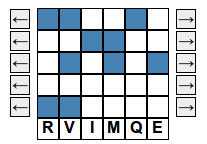 - La 2e lettre est E donc on tourne la première ligne d'un cran vers la gauche et la 5e ligne d'un cran vers la gauche :
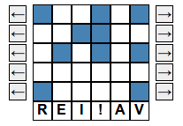 - On doit tourner encore des lignes pour faire apparaître un mot. Si on tourne la 4e ligne on n'a rien de nouveau. On ne peut pas tourner la ligne 5 sans perdre le début du mot qui est maintenant RE. On peut tourner la ligne 3 mais seulement de 2 ou 4 crans car autement on perd le début du mot, et on n'a rien de nouveau si on tourne de 2 ou 4 crans. Ainsi on bouge les lignes 1 et 2. Quand on tourne la ligne 2 d'un cran à droite, on obtient :
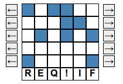 - On reconnaît le mot REQ---- comme étant REQUIN et on bouge la ligne 2 d'un cran à droite pour avoir la solution :
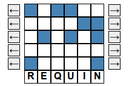
- Pour faire apparaître le début DI on tourne
- la 2e ligne de 3 crans à droite;
- la 3e ligne d'un cran à droite;
- la 4e ligne d'un cran à gauche;
- la 5e ligne de 2 crans à gauche.
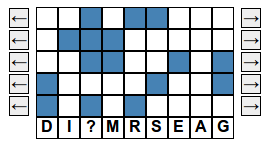 - On remarque que la 2e ligne est fixée car on ne peut pas la modifier sans changer les deux premières lettres DI. Pour chercher la position de la première ligne, on cherche à éliminer les signes de ponctuation au milieu du mot. Ces caractères ont deux carrés bleus sur les lignes 1 et 2, donc on doit tourner la 1ère ligne à droite de 2, 3 ou 4 crans. On commence par essayer 2 crans :
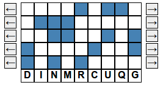 - Afin d'obtenir un mot, on cherche une voyelle après le début DIN. Comme la ligne 2 est fixée, la voyelle a un carré bleu en 2e position, les seules possibilités étant I et O. On commence par essayer de former la lettre O en tournant la ligne 4 de 4 crans vers la droite.
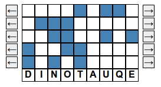 - On reconnaît le mot DINOSAURE et on le fait apparaître en tournant la ligne 5 de 2 crans vers la gauche et on trouve :
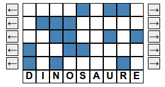
On essaie un à un les différents débuts possibles pour une question : QUE, QUAND, QU'E, QUI. On tournent les lignes et on remarque que pour chaque début on a 0, 1 ou 2 phrases possibles :
- Pour faire apparaître le début "QUE" et la fin "?" la première ligne doit commencer par deux carrés bleus et un carré blanc et finir par un carré bleu, donc on n'a que deux positions possibles. La deuxième ligne doit commencer par 3 carrés blancs et finir par un carré bleu, ce qui ne laisse que 2 possibilités. Il est impossible d'obtenir une phrase qui a du sens.
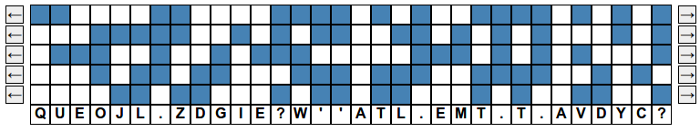 - Pour faire apparaître le début "QUAND", la première ligne doit commencer par 2 carrés bleus et 3 carrés blancs et doit finir par un carré bleu, ce qui ne laisse qu'une seule position possible. De manière similaire, toutes les lignes ont très peu de possibilités, ne permettant pas d'obtenir une phrase.
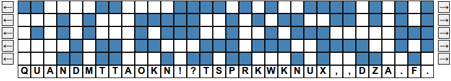 - Pour faire apparaître le début "QU'E" et la fin "?", la première ligne doit commencer par 3 carrés bleus et un carré blanc et finir par bleu, ce qui ne laisse que 2 possibilités. Le nombre de possibilités est très limité pour toutes les lignes et aucune ne correspond à une phrase.

- Pour faire apparaître le début "QUI " et la fin "?" la première ligne commence par 2 carrés bleus, un carré blanc et un carré bleu et termine par un carré bleu, ce qui laisse 2 possibilités. De même les autres lignes n'ont que très peut de possibilités, fixons par exemple la configutration suivante :
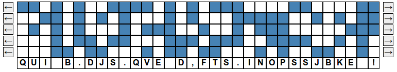 On teste toute les possibilités pour les lignes 4 et 5 qui commencent par 3 carrés bleu et un blanc et on trouve la solution :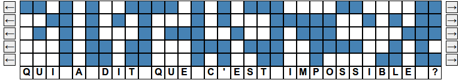
C'est de la crypto !
Les chiffres tomographiques ont deux étapes :- d'abord on remplace chaque lettre par plusieurs symbôles, ici des carrés bleus et blancs;
- ensuite on échanges des symbôles entre eux, ici en tournant les lignes.